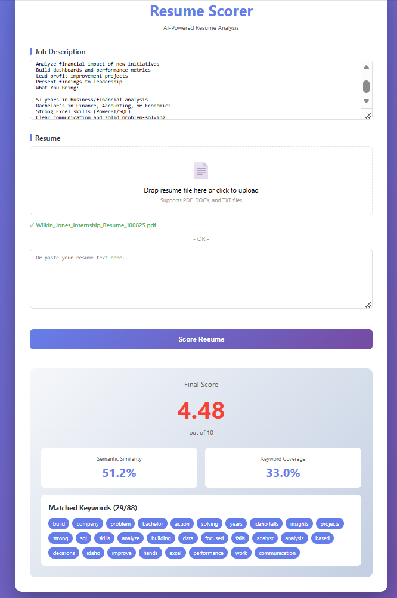

VAD Emotion Detection Update: Breakthrough Results & New Applications
Major Milestone Achieved: Variance Above 0.70 Across All Dimensions
Let me cut right to the chase with some exciting news:
I did it.
After months of data collection, labeling, and model refinement, my VAD (Valence-Arousal-Dominance) emotion detection system has achieved variance scores above 0.70 across all three emotional dimensions.
For those keeping score at home, that’s:
Valence (positivity/negativity): >0.70 variance
Arousal (energy/intensity): >0.70 variance
Dominance (control/confidence): >0.70 variance
I accomplished this with over 300,000 labeled text entries from real conversations, messages, and interactions.
This isn’t just a technical achievement. This is proof that AI can be taught to understand how people feel, not just what they say.
What This Means for Emotionally Intelligent AI
When I started this project, the goal was straightforward: build a chatbot that could detect when someone is frustrated, happy, or anxious and respond appropriately.
But hitting >0.70 variance means I’ve accomplished something bigger:
I’ve taught AI to understand emotional context at scale.
Here’s why that matters:
The Technical Breakthrough
Traditional sentiment analysis is binary: positive or negative. Maybe neutral if you’re fancy.
But real human emotion? That’s three-dimensional:
- Valence: Are they happy or upset? (positive vs. negative)
- Arousal: Are they calm or intense? (low energy vs. high energy)
- Dominance: Do they feel in control or powerless? (confident vs. submissive)
With variance above 0.70, the model can now distinguish between:
- Excited (high valence, high arousal, high dominance): “This is amazing!”
- Anxious (low valence, high arousal, low dominance): “I’m really worried about this”
- Content (high valence, low arousal, high dominance): “Everything is going smoothly”
- Defeated (low valence, low arousal, low dominance): “I give up”
Same words? No. Same feeling? Absolutely.
That’s the power of semantic embeddings and pretrained text models.
Building the Dataset
You can’t fake emotional intelligence with a few hundred examples.
To truly teach AI what “frustrated” feels like versus what “annoyed” feels like, you need massive, diverse, real-world data.
I built a dataset of over 300,000 labeled entries from customer service interactions, social media conversations, gaming chats, and public emotion-labeled datasets.
The result? An AI that doesn’t just recognize keywords but recognizes emotional patterns across different writing styles, contexts, and intensities.
Real-World Applications: Customer Service & Beyond
With the emotion detection system working reliably, it can now be deployed in:
Customer Service Chatbots
Detect frustration early and escalate to humans before customers rage-quit.
Mental Health Monitoring
Track emotional patterns over time to identify when someone might need support.
Educational Tools
Adapt tutoring tone based on student confidence and stress levels.
Community Moderation
Identify toxic or distressed communication patterns automatically.
The applications are endless when AI can read between the lines.
The Unexpected Spin-Off: AI-Powered Resume Scoring
Here’s where things get interesting.
While working on the VAD project, I had a realization:
If AI can understand emotional context in text… why can’t it understand professional context in resumes?
Think about it. I was using pretrained text embeddings (specifically sentence-transformers with the all-MiniLM-L6-v2 model) to convert emotional language into mathematical vectors.
These embeddings don’t just capture words but capture meaning.
When someone says “I’m frustrated” vs. “I’m annoyed” vs. “This is unacceptable” – the AI understands these represent similar emotional states despite using completely different vocabulary.
That’s semantic similarity.
And I realized the exact same technology is probably being used already for hiring and creating features to help filter candidates for positions.
The Problem with Traditional Resume Screening
Most resume screening systems work like this:
IF resume.contains("Python") THEN score++
IF resume.contains("ETL") THEN score++
ELSE reject_candidate()It’s pure keyword matching. No context. No understanding.
Example:
Job Description: “Looking for experience with ETL pipelines and cloud architecture”
Candidate’s Resume: “Built automated data workflows in AWS”
Traditional ATS: REJECT - Missing keywords “ETL” and “architecture”
Reality: This candidate literally described ETL and cloud work… just not using those exact buzzwords.
Building a Smarter Resume Scorer
So I built a proof-of-concept system using the same semantic embedding approach from the VAD project.
Here’s how it works:
Step 1: Smart Keyword Extraction
Use spaCy NLP to extract meaningful terms from job descriptions (nouns, noun phrases, action verbs) while filtering out generic junk like “do,” “make,” “the,” etc.
Step 2: Semantic Embeddings
Convert both resume and job description into 384-dimensional vectors using the same sentence-transformers model from the VAD project.
Step 3: Calculate Match Score
Combine semantic similarity (65%) + keyword coverage (35%) for a final 0-10 score.
The Resume Scorer in Action
Here’s what the system looks like when analyzing a real resume:

Notice the scoring breakdown:
- Semantic Similarity Score: How well the overall meaning aligns (even without exact keyword matches)
- Keyword Coverage: Which specific terms from the job description appear in the resume
- Matched Keywords: Visual confirmation of what the system found
This dual approach is important. While semantic similarity is the star of the show (understanding meaning without exact matches), keyword matching still matters for a practical reason:
Real hiring managers do scan for specific technologies, certifications, and industry terms. So the system uses:
- 65% semantic understanding: to catch candidates who describe the right skills differently
- 35% keyword presence: to ensure critical industry-specific terms aren’t completely missing
It’s not about choosing semantic OR keyword matching — it’s about combining both to create a more complete picture than either approach alone.
Why This Matters for Small Businesses & Hiring Teams
Right now, small businesses face a nightmare:
- Can’t afford expensive ATS platforms
- Don’t have HR teams to manually screen hundreds of resumes
- Lose great candidates because they didn’t use exact buzzwords
This resume scorer changes that:
Free or low-cost: No enterprise software needed
Fast: Score resumes in seconds
Fair: Understands meaning, not just keyword matches
Transparent: Shows which skills matched and which didn’t
Real-World Use Cases
For Hiring Managers:
Quickly identify top candidates without reading 200 resumes manually.
For Recruiters:
Pre-screen applicants before sending them to clients.
For Job Seekers:
Get instant feedback on how well your resume matches a job posting.
For Small Businesses:
Build hiring workflows without expensive tools or dedicated HR staff.
The Connection: Transfer Learning in Action
Here’s the key insight:
The same pretrained text embeddings that taught AI to detect emotional nuance can teach it to detect professional relevance.
Both problems require understanding context and meaning, not just matching words.
The VAD project didn’t just train an emotion detector but validated that semantic similarity models can capture subtle distinctions in human communication.
That’s transferable knowledge.
What’s Next for Both Projects
VAD Emotion Detection: - Deploying live customer service chatbot demos - Prepping for a live presentation of it
Resume Scorer: - Building web app for job seekers and hiring managers - Testing with small businesses to streamline hiring workflows - Exploring integration with existing HR tools
These projects prove the same thing:
AI doesn’t need to just match patterns. It can understand meaning.
And that changes everything.
Want to Learn More or Collaborate?
If you’re interested in:
- Testing the emotion detection system for your customer service team
- Using the resume scorer for your hiring process
- Collaborating on NLP research projects
Email: official@wilkinjones.com
Schedule a Call: calendly.com/official-wilkinjones
This is what happens when you teach AI to understand context – whether that’s emotions, skills, or intent. The breakthrough in one domain unlocks applications in dozens of others.